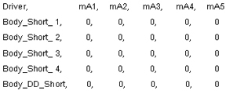
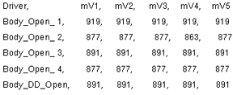
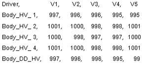

Table 8: 3.0T Body Mode With Old LPCA
 | In 3.0T Body Mode the Dynamic Disable lines are checked for current leakage. Since no high voltage is applied during this mode no current should be flowing. Current flow in this mode might indicate that the Driver Module circuitry is leaking. |
 | In this test the Dynamic Disable lines are forward-biased. Voltage drops like those shown at the left should be seen. Circuits exhibiting significantly higher voltage drops indicate that the circuit may be open (line is disconnected) or that the circuit has a high resistance (poor connection). Anything over 7000 usually indicates an open circuit. Check the connections in the circuit. |
 | In 3.0T Body Mode no high voltage is applied so these results should always show zero (0) volts. If voltage is seen here then this would indicate that the Driver Module is malfunctioning. |